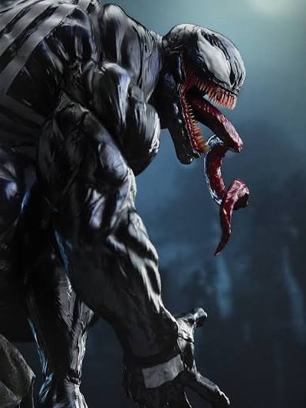
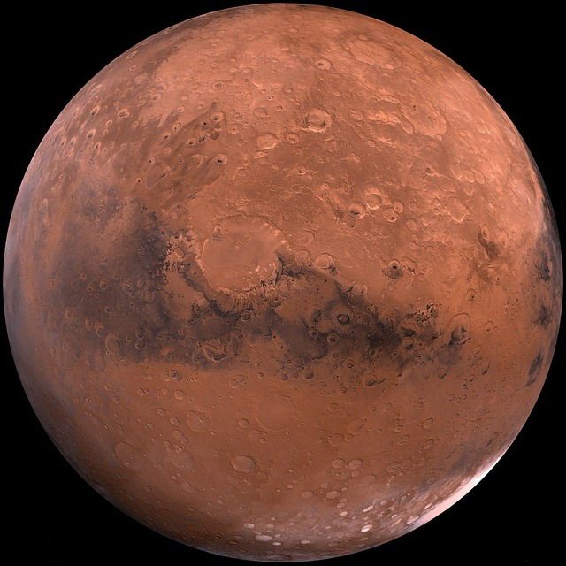

Kişisel proje koleksiyonu
Merhaba, keşfetmeye başlayalım.
Oyunlardan şehir keşfine, Mars'tan yeni teknolojilere uzanan projelerim.

Uzay · Galeri · Başvuru
Mars Keşfi
Kızıl gezegenin dünyasına göz at, uzay galerisini gez.
Mars'a git
Kahramanlar · Akademi
Süper Kahraman Akademisi
Kahraman kadrosunu keşfet ve akademiye katılmaya hazırlan.
Akademiye gir